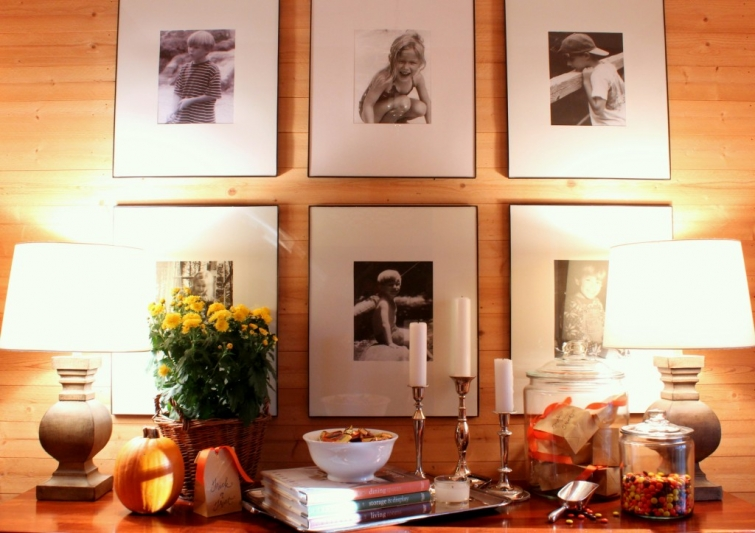
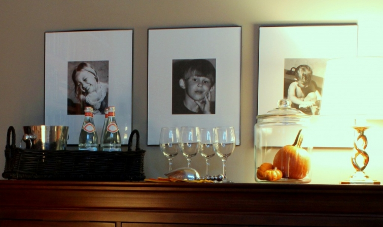
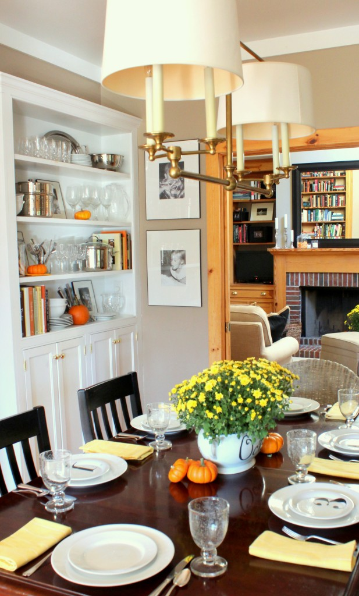

.png)
.PNG)
.PNG)
.PNG)
.PNG)
.PNG)
.JPG)
.JPG)
.PNG)
.PNG)


It’s no secret that I love photographs – black and white photographs.
They are everywhere in our home. And I do mean everywhere.
From the foyer…
to the family room…
to the dining room…
and kitchen.
 They are in the playroom…
They are in the playroom…
and the hallways…
in the bedrooms…
and even in the bathrooms.
It would appear that I have gone a little overboard with all the photography around here. 🙂 I have never been one to commit to art. (Heaven forbid, that would mean a commitment to a color.) But I really like how photography gives a personal touch to a home, and by using the same frame and mat style throughout, continuity is provided. It helps the spaces flow from room to room.
The largest arrangement here is in the foyer with its arrangement of 6 pictures, but I have another area – a larger one – in mind for a gallery wall. So I have been looking at a ton of inspirational photos to help me get this project started, and I thought you might enjoy seeing some of the eye candy.
Let’s start with this Phoebe Howard stairway…
Unfortunately, my project is not up a stairway. But I do like this particular arrangement for all of its black and white photography (of course) and its uniformity in framing style….large expanse of white mat contrasting with the dark frame.
Or how about this one with all the photographs framed in white?
I wish we had some of these vintage ones to hang on our gallery wall. They would be perfect.
Believe or not, I am actually thinking of being a little more brave with this project I am planning here. I want to use a mix of different size photos. (Really!) Isn’t this hall arrangement beautiful?
Or maybe… hanging won’t even be required. Perhaps shelves will work better. hmmm.
(Even Mary Kay Andrews did that in her Ebbtide beach house.)
Another option might be to hang the items from wires with clips.
While I am thinking of being brave by mixing different sizes in the arrangement, I am also planning on using an assortment of items – not just photographs. (You just fell out of your chair in shock, didn’t you? 🙂 ) Seriously, this gallery wall can handle the variety. How about some of these for inspiration?
And an assortment of Pottery Barn ones…
(There’s a good tutorial for creating gallery walls on their site right now.)
And that’s all the eye candy I have for you today, but I do have some exciting news! I am over-the-moon delighted to be participating with a group of very talented women who are each working on their own gallery wall. Please click on their links below to see more inspirational eye candy today. I know you will enjoy them. 🙂
Our next installment on this adventure (when I show you where this gallery wall is going 🙂 ) will be next Monday, October 13. So be sure you stop in then for a visit to find out all the details. I am off to get this project up and going today. 🙂
Until next time…


.PNG)
Your home is absolutely gorgeous! Your photos add so much warmth! Love all the details throughout….like your shelves in the dining room, the hallways….everything!
———————————————————————–
Goodness! Thank you so much Annie! That is so very sweet of you to say that. I am happy you like our home. It is well used and abused. 🙂
Kelly
You have such a lovely home! I have been seeing so many blog posts about gallery walls lately and it makes me want to create some of my own! Unfortunately, an elaborate gallery wall is difficult to do when you’re renting… One day!
——————————————————————–
Thank you Katie. Renting does make it hard to be able to decorate the way you want. Try command hooks for hanging your things. They are supposed to be easy to remove.
Kelly
[…] Classic Casual Home Design Chic Design Indulgence Driven by Décor 5th and State Gwen Moss Lovely Things Rough Luxe Talk of the House […]
Whatever you do, I know it will be beautiful. Thanks for the great ideas. I’ve been wanting to do this for a long time. Maybe this is just the inspiration I need.
—————————————————————-
Barb, thank you for your vote of confidence! I hope all of us can give you the inspiration you need to make the project a reality in your home.
Kelly
Kelly,
Thanks for sharing the inspirational gallery walls. I can’t wait to see what you do and where you put it!
——————————————————————–
Thank you for reading the post Dawn. Please be sure to check back on each of the next two Mondays for updates. (Hopefully, it will all come together. 🙂 )
Kelly
Well great minds do think alike! We both love the sepia tone vintage gallery wall! I love all of your black and white photos…they are classic and so easy to change around. I am looking forward to seeing what you come up with ! Have a great week,
———————————————————————-
Yes, great minds DO think alike. 🙂 I dearly need some of those team photos. So glad you liked all the photos here Sherry. I am excited to see your finished project in 2 weeks (and mine finished too!)
Kelly
I just took down a quilt that has been hanging in our stairwell for years. I mean years!!! I want to do a gallery in black and white as well. Now to begin going through old photos and finding ones to work with. I have thought about doing a family tree and actually painting a tree and hanging pictures from the limbs. In my hallway I have hung two curtain rods on the wall. I have some photos hanging from them. I really need to update it and add some more pictures. I think I may also reframe some of my kids artwork from when they were little and hang them as well.
————————————————————————
I love a stairwell gallery wall – and even moreso if it involves black and white photography. Going through tons of photos takes time, but the end result will be wonderful. Good luck with your project Jayne!
Kelly
Kelly,
I was thrilled to see the people involved in this project. I love wall galleries and can never have too many inspiration images, especially for this group of talented designers. I’ll look forward to seeing what you come up with. I love some of the inspiration images you’ve shared.
xo,
Karen
——————————————————————-
Karen, I was thrilled to be included with this majorly talented group of women. (Not sure how I got so very lucky!) I look forward to seeing all of their projects and actually finishing mine. LOL
Kelly
We went big instead of a gallery wall in our cabin. But we still want to do a gallery wall showcasing friends from around the world somewhere. I wish I could show you our walls (our safari pictures). My problem with gallery walls are that sometimes they feel messy. And if the house is disorganized, it only adds to it. So I prefer same color, same size frames. But your home is so beautiful, any type of gallery wall will look great!
———————————————————————–
Safari pictures! Oh my! You must be major travelers Maria. 🙂 You are right about gallery walls can look messy (or “busy” as I call it.) I think that is why I like using the same style of frame here. There are enough other “things” in our rooms, that the similar frame style helps to “calm” the look of the space. I used to mix things up years ago but have streamlined my “artwork” over the years.
Kelly
Lots of inspiration here and at the other blogs. You have a beautiful home – and I love that you actually have books on your bookshelves – yay! Now that we’ve moved to a much smaller house (log cabin, actually), I don’t have nearly the room to display the family photos I had at our previous home. I’m thinking of doing a gallery wall up the stairs. While the ordered look of all black and white photos in same size black frames with white mats is appealing, it feels a bit too regimented for me. I have many older photos in their original frames that I love. So my preference is a mix of frame styles and sizes with various wood, aged brass, and gilt frames for a more collected-over-time look. My favorites are antique frames and I’m always on the lookout for lovely ones for family photos. I also love seeing artwork mixed in, which can be as simple as a framed card. Framing and artwork can be expensive, though, but I know a nice gallery can be done with simple frames/mats from Target or Pottery Barn.
————————————————————————-
Thank you for your kind words about our home, Carolyn. I have always loved a gallery arrangement up a staircase, so I hope you have fun doing yours. I agree that old photos look best in antique frames. It really adds to the “story” of the place.
Thank you so much for reading and taking the time to comment here. I appreciate it!
Kelly
I cannot wait to see what you come up with you are definately the master of black and white! We chose one of the same inspirational images and almost several other!! We must be thinking along the same lines!!
———————————————————————
There were sooo many inspirational photos out there to choose from. It is amazing we chose some of the same…kind of scary! Thank you again for coming up with this fun way to share ideas on a project. I look forward to seeing what you come up with!
Kelly
I love gallery walls! Here is a hint to make it easier — trace all of your frames onto paper & tape them up where you think that you want the photos to go. It’s way easier to move them around at that point than to put a million holes in your walls.
———————————————————————–
Since I have been the queen of making holes in the walls, I thought I would try that this time to see if it really works. I don’t know if it will give me enough visual-ness (made up that word! 🙂 ) to really make a decision about how and where I want things to go, but it should give me a good start. I know my walls will appreciate it at least.
Kelly
Hi Kelly, nice to meet you! What an impressive collection of black and white photos you’ve got in that beautiful home of yours! It’s funny, because I love black and white, but somehow I never have enough restraint when it comes to my walls. I always end up choosing color. I can’t wait to see what you’ve got planned for your gallery wall, I love your style.
——————————————————————–
Thank you Leslie! It is so nice to meet you as well. I look forward to seeing your gallery wall in a couple of weeks too. I know it will be beautiful. 🙂
Kelly
hello kelly
great to meet you via this fun project. your inspiration images have me rethinking….oh no!
cheers
debra
———————————————————————
Nice to meet you too Debra! I know all too well how images can make your wheels start turning. I look forward to seeing your finished project. 🙂
Thank you for stopping by!
Kelly
Wow! How exciting!! I love all of these ideas BUT have no talent in this area— looking forward to learning how to arrange an interesting gallery in my living room. I have to tell you the touches of orange/yellow throughout your home are just right– I don’t have that talent either!! I seem to always go “overboard” with everything I do!:) I have to tell you –I keep trying to zoom in to see the titles of your books– I could spend hours in your “library”! Maybe some time you could share your list of favorite books? Oh, for some reason?? the picture of the white frames never uploaded from babble– I wonder why?
———————————————————————–
Hope we can help you with arranging things in a gallery wall Louvina. Glad you liked the orange and yellow, but those are old photos. I need to do some for this year. Nothing wrong with going overboard (unless of course you are in a boat. LOL) I have had plans to do a series of book/library posts, but just have not found the time for it. Don’t know why that photo didn’t load for you. Sorry.
Kelly
Oh I can’t wait to see your wall.
——————————————————————–
Be sure you come back on the next two Mondays then Marty. Thanks for stopping by today!
Kelly
I have always admired your black and white family photos, Kelly. I think it was a bold commitment to carry that throughout your home. They are just lovely!
I can’t wait too see what you have up your sleeve with the new gallery wall though. And for the record….I DID almost fall out of my chair….and I laughed out loud too! 🙂
I love all the inspiration photos. I’ve always thought that those vintage team photos would be a neat thing to collect.
———————————————————————-
Ha Ha Jill! Yes, it is very out of character for me to go in a different direction, but I am trying. 🙂 If you happen to find a stash of vintage team photos, save some for me. I could certainly use them in this particular gallery wall.
Kelly
Wow, Kelly you home looks amazing and I love the way you have used black and white gallery walls of your precious family throughout…like you say, it adds a wonderful personal touch. The Style Me Pretty image is beautiful – love the way they had one central large piece with the others around.
———————————————————————–
So glad you liked all the photos here. I loved that one from Style Me Pretty, too. Working all the photos around that central one was a great way to do it. Can’t wait to see yours! 🙂
Kelly
I am a fan of gallery walls and have a couple of small ones in my home. I love how you did all the frames the same…you got me thinking that I might need to change things here at our house. Love that look.
Can’t wait to see what you will do…I know it will be wonderful.
———————————————————————
I bet yours are great, Cheri! Thank you for your vote of confidence on the one here….hope I can be brave and do something a little different. 🙂
Kelly
Your home is beautiful and I absolutely love how you have family pictures in so many rooms. All of those black and white inspiration images are right up my alley – I’m sure your finished gallery wall will be gorgeous!
——————————————————————-
You are too sweet Kris. Thank you. I hope the gallery wall turns out well. I know yours will be beautiful!
Kelly
Love your home and am “in love” with your kitchen light fixture. Can you provide the name of the store where you purchased this fixture…also light the hall light fixture.
——————————————————————–
Thank you Nannette! I love that light too and searched for a very long time to find one I liked. The link to the online source can be found by clicking on “The House” tab in the menu bar at the top of the blog. It will take you to a page of sources, and the information on the light is right below the photos of the dining room.
Kelly
I love all the photographs–it’s one of my favorite things about your home. As far as the vintage photos go, it’s never too late! What if you took panoramic photos of your home, each of your parents’ homes, or other places special to your family, and printed them out in black and white or other “vintage” finishes? If nothing else, your children could have vintage pics when they do their gallery walls in the future. 🙂 Just a thought….
Enjoy your day!
———————————————————————
What a smart idea Mimi! I will have to give that a try (if I can figure out how to do that with my camera. 🙂 )
Kelly
So love this post; so many great ideas! I know you have probably posted this before, but where do you find most of your frames? Wish I had done this many years ago. My husband is a photo buff like you and we have tons of color pictures. I need to convert them to black and white…love that concept. Blessings
———————————————————————-
Glad you enjoyed the post Gail. The information on the frames can be found by clicking on “The House” in the menu bar at the top of the blog. When you get to that page, just scroll down to the sources listed below the foyer photos. You will find it there.
Kelly
I still love my picture wall that is like yours. People stop in their tracks to look at the pictures too. 🙂
——————————————————————
That is wonderful Stacey!
Kelly
How gorgeous is your home!!! Makes me want a lot more black and white photos and to do lots of gallery walls!!! Thanks for the inspiration.
——————————————————————–
Thank you so much! All of your inspirational photos made me want to take down the photographs and put up art. LOL
Kelly